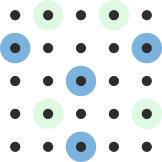

Imputation can help complete your
datasetsefficiently and accurately
Our imputation service leverages Terra and uses a large and diverse reference panel that combines genomes from both the
All of Us Research Program and AnVIL Centers for Common Disease Genomics.
The cloud-native service scales to match the size of your genomic research.

Large, high-quality dataset
515K+ genomes from All of Us and AnVIL.
Secure service
Our service is FedRAMP Moderate and approved by the NIH for use with controlled-access data.
View our security documentation here.
Diverse reference panel
Representation across genetic ancestries for more accurate results. Learn more about the reference panel.
Three imputation pipelines powered by one rich dataset.
Each pipeline is optimized for a different input data type. Select one below to explore how it works and get started.
NUMBER OF GENOMES *PERCENTAGE
How does the imputation service work?
Learn about the steps needed to use the imputation service for your research project.
This imputation service from Broad Clinical Labs was made possible with support from
the National Institutes of Health’s All of Us Research Program, the National Human Genome Research
Institute, and the Broad Institute.
This work was made possible by National Institutes of Health (NIH) awards: (1) OT2OD035404,
"All of Us Data and Research Center (DRC);" (2) OT2OD03821, "Broad-Color: The Genome Center for
the Future of All of Us;" (3) OT2OD002750, "The Broad-LMM-Color Genome Center for All of Us,"
funded by the NIH Office of the Director; and (4) U24HG010262, "AnVIL: A National Resource for Genomic Data
Analysis and Visualization," funded by the National Human Genome Research Institute.
All of Us and the All of Us logo are registered trademarks of the U.S. Department of Health and Human Services.
The inclusion of trade names, logos, trademarks, and references to outside entities does not constitute or imply an endorsement by any Federal entity.